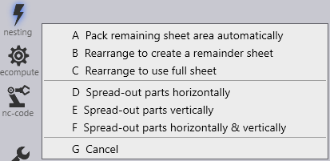

Nesting
Click on the Laser Tech icon to assign tooling for the imported part.
Quick-Nest
Select the Quicknest option in the workflow or use shortcut key N to do a quick auto-nest. Number of the parts nested depends on the sheet size.
-
With a simple click on the quick nest icon you can create a full sheet of parts.
-
with ctrl+click you could adjust the quick nest settings.
-
with shift+click creates a singel part which could be then multiplied by draging the field.
-
with ctrl+click remove the created quick-nest.
Quick-Nest Settings
Selecting the window next to the quicknest which opens the quick-nest settings.
In this sheet size, rolling direction, spacing between parts, starting corner can be changed.
Nesting options

| Nesting options | Explanation |
|---|---|
Pack remaining sheet area automatically |
This option will utilise any remaining parts and pack these into the sheet |
Rearrange to create a remainder sheet |
This option will try to pack the parts on layout to create a remainder sheet. |
Rearrange to use full sheet |
Rearranges parts to try and use up as much space on the sheet as possible. This reduces scrap cut and tries to increase material utilisation. |
Spread-out parts horizontally, vertically or both |
This option will try to spread out the parts horizontally and/or vertically to try and reduce scrap sheet and increase material utilisation. |
| Spread-out parts options will cancel the default part distance/gap from the nest settings. |
Recompute
The recompute option is available to allow the laser tooling to be reset to its original computation. There are several options available for the software to recompute the tooling whilst also keeping other elements of the tooling the same.
To recompute the tooling, click the recompute icon found on the left-hand side of the screen or alternately use the R shortcut key.
| Recompute options | Explanation |
|---|---|
Drop existing tooling |
This option will revert any changes made to the tooling back to the original set-up. |
For untooled elements |
This option will tool any untooled segments. |
Sequence |
When selecting this option, any changes made to sequencing will be reverted back to the original set-up. |
Routing |
Selecting this option, any changes made to routing will be reverted back to the original set-up. |
| Use the keyboard shortcut keys from A to E to use the most feasible recompute option. |